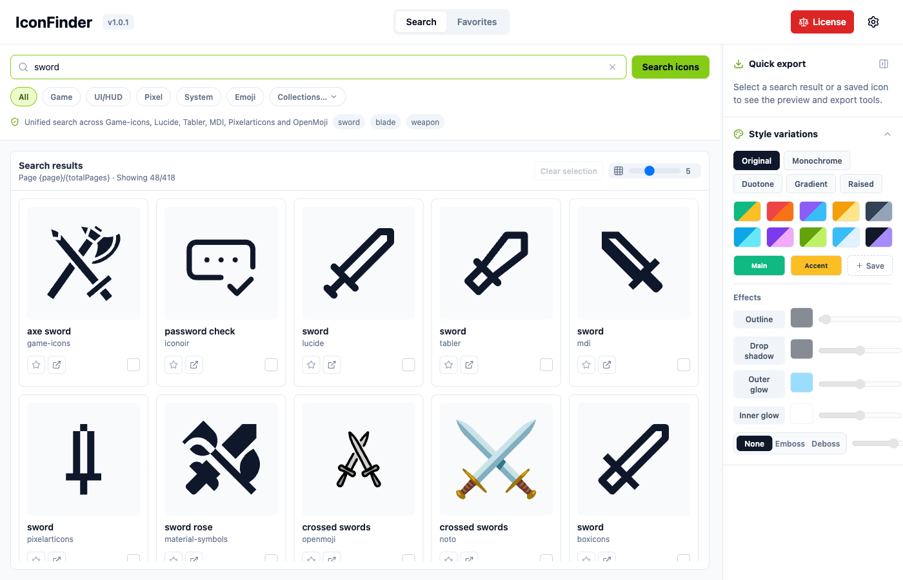
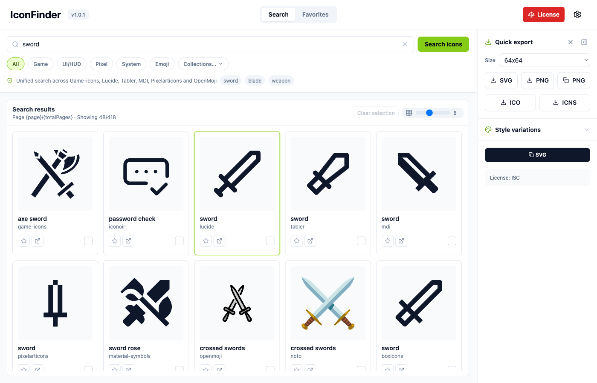
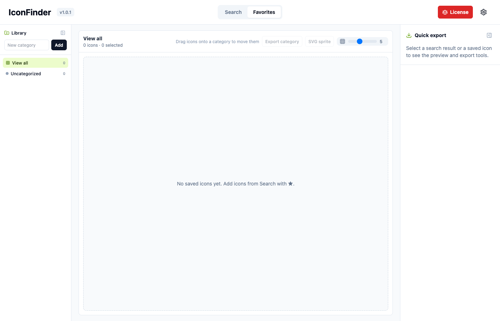
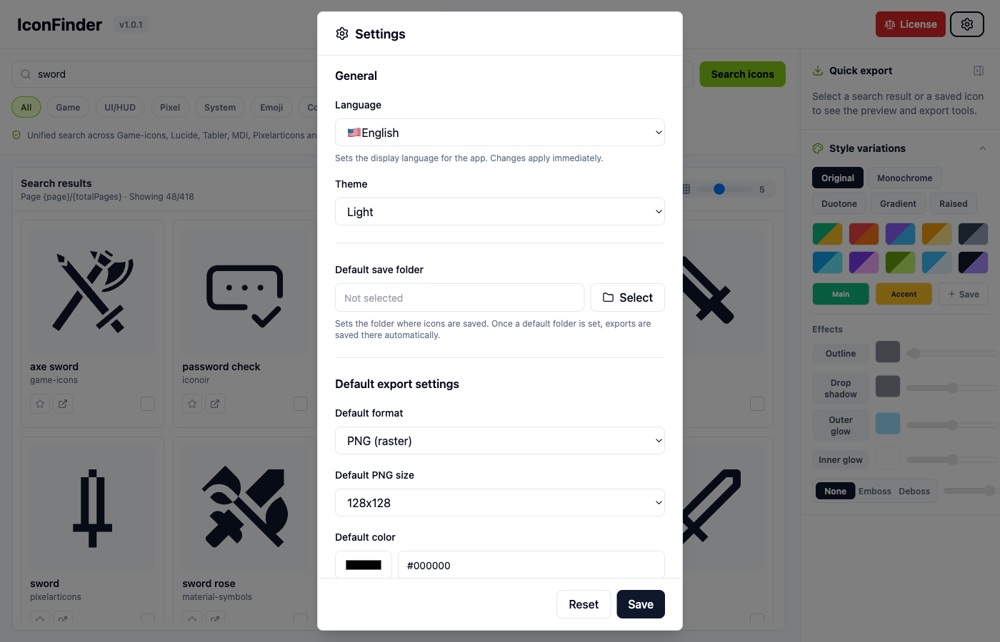

왼쪽 · 보관함
카테고리 & 즐겨찾기
게임용 기본 카테고리와 ☆ 즐겨찾기 스마트 뷰. 드래그로 옮기고, 카테고리 단위로 스프라이트까지 내보냅니다.
Desktop icon workspace
IconFinder는 Iconify 아이콘 275,000+개를 검색하고, 즐겨찾기로 정리하고, 색·효과를 입혀 SVG·PNG로 내보내는 데스크톱 앱입니다. 게임·UI 작업에 맞게 큐레이션된 팩과 한글 검색을 지원합니다.

검색 · 스타일 · 내보내기가 한 화면에 모여 있는 워크스페이스
Workspace
IconMaker의 검색/에디터 탭을 하나로 합쳤습니다. 찾아두고, 다듬고, 바로 내보냅니다.
게임용 기본 카테고리와 ☆ 즐겨찾기 스마트 뷰. 드래그로 옮기고, 카테고리 단위로 스프라이트까지 내보냅니다.
전체 / 게임·UI·픽셀 팩 / 단일 컬렉션. 한글 검색어는 영어 태그로 자동 확장되고, 그리드는 가상화되어 부드럽게 스크롤됩니다.
SVG·PNG·클립보드 PNG, ICO/ICNS. 색·외곽선·발광·베벨을 적용한 뒤 즐겨찾기에 스타일까지 저장할 수 있습니다.
Features
Lucide, Tabler, MDI, Game-icons 등 큐레이션 팩을 넘나들며 검색합니다. 마음에 드는 아이콘은 별만 누르면 미분류 즐겨찾기로 들어갑니다. 적용 중이던 스타일도 함께 저장됩니다.

원본 / 단색 / 투톤 / 그레디언트 / 입체. 외곽선·그림자·발광·양각·음각까지 조절한 뒤 「재적용」으로 저장하세요. Favorites에서 아이콘을 고르면 우측 패널이 그 아이콘의 설정으로 바뀝니다.

선택 아이콘 또는 카테고리 전체를 일괄 내보내기합니다. @1x/@2x/@3x, Android mipmap, iOS AppIcon 프리셋과 SVG 스프라이트를 지원합니다. 설정에서 기본 저장 폴더만 지정하면 됩니다.

Install
GitHub Releases에서 OS에 맞는 파일을 받아 실행하세요. 이후 업데이트는 앱이 Releases를 확인해 안내합니다.
IconFinder_*_universal.dmg 를 다운로드합니다. (Intel · Apple Silicon 공용)
*_x64-setup.exe (권장) 또는 *_x64_en-US.msi 를 받습니다.
참고: 현재 공식 바이너리는 macOS·Windows만 제공합니다. Linux 패키지와
Homebrew / winget은 아직 없습니다. 개발자라면 저장소에서
npm run tauri build로 직접 빌드할 수 있습니다.
Quick start
가운데 검색창에 영어 또는 한글(예: 칼, 방패)을 입력합니다. Game / UI/HUD 등 스코프 칩으로 범위를 좁힐 수 있습니다.
결과 카드를 클릭하면 오른쪽에 미리보기와 스타일 패널이 열립니다. 색·효과를 맞춘 뒤 ★로 즐겨찾기하면 그 스타일이 함께 저장됩니다.
SVG/PNG 다운로드, PNG 복사(클립보드), ICO/ICNS를 사용하세요. 코드가 필요하면 SVG·HTML·CSS·React·Vue 복사 버튼을 쓰면 됩니다.
상단 Favorites 탭으로 이동해 카테고리로 분류하고, 일괄 내보내기나 SVG 스프라이트로 프로젝트에 넣습니다. 설정에서 기본 저장 폴더를 지정해 두면 더 빠릅니다.
| 동작 | 키 |
|---|---|
| 검색창 포커스 | ⌘/Ctrl + K |
| 퀵 내보내기 | ⌘/Ctrl + S |
| 즐겨찾기 토글 | ⌘/Ctrl + F |
License
IconFinder는 Iconify API로 아이콘을 가져옵니다. 각 아이콘의 라이선스는 해당 컬렉션 정책을 따릅니다. 상업 배포 전에 앱의 License 버튼과 원본 링크를 꼭 확인하세요.
| 세트 (예시) | 라이선스 |
|---|---|
| Lucide | ISC |
| Tabler · Iconoir · Pixelarticons | MIT |
| Material Design Icons · Noto Emoji | Apache 2.0 |
| Game-icons | CC BY 3.0 |
| OpenMoji | CC BY-SA 4.0 |
「All」검색은 더 많은 컬렉션을 포함합니다. 표시되지 않은 라이선스·상표 이슈가 있을 수 있으니 사용 전 출처를 확인하세요. 위 내용은 법적 조언이 아닙니다.